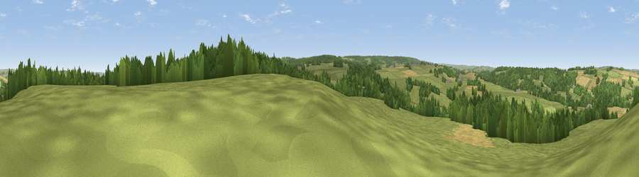

Viewpoint near Riding Mill
#23172 in England · top 58% of its area beats it · near Riding MillWhere it is
The exact computed spot (NZ 00075 59425). Click the marker for map links.
The view, rendered

A 360° render of this exact spot computed from the terrain model, tree cover and land cover — summer colours, afternoon light, calibrated against photographs of famous viewpoints. Real trees, hedges and buildings will differ in detail.
The panorama
Grey silhouette: terrain skyline in each direction (720 bearings, Earth curvature and refraction included). Dashed green: skyline with trees (+15 m) and buildings (+8 m) as obstacles. Blue strip: how far the ground is visible on each bearing.
Where the view opens
Wedge length = distance to the farthest visible ground on that bearing (vegetation-aware). Rings at 10, 25 and 50 km.
What fills the view
53% grassland · 36% woodland · 10% cropland
Angular shares of the visible panorama (visual magnitude), not map area. Landscape diversity 0.42 (0–1 Shannon).
Key numbers
More beautiful places nearby
The staircase of upgrades: each row has a higher view potential than everything closer. Driving times are estimates from straight-line distance, calibrated against real road routing — check an actual route before setting out.
| Place | Direction | Drive | Score |
|---|---|---|---|
| Viewpoint near Slaley | SSW · 2 km | ~6 min | 49.9 |
| Viewpoint near Corbridge | NNW · 3 km | ~7 min | 59.7 |
| Viewpoint near Corbridge | NW · 4 km | ~9 min | 61.0 |
| Viewpoint near Slaley | S · 5 km | ~10 min | 69.8 |
| Currock Hill | E · 9 km | ~18 min | 70.4 |
| Viewpoint near Hedley on the Hill | E · 10 km | ~19 min | 71.5 |
| Viewpoint near Greenside | E · 12 km | ~23 min | 74.2 |
| Pontop Pike | ESE · 16 km | ~29 min | 77.8 |
54.92951, -2.00036 · source: screening · position refined by local search. Computed location — check access rights before visiting.